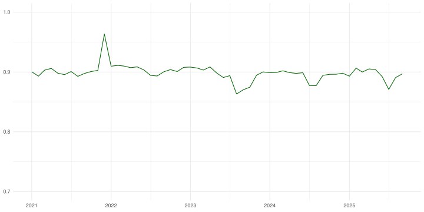
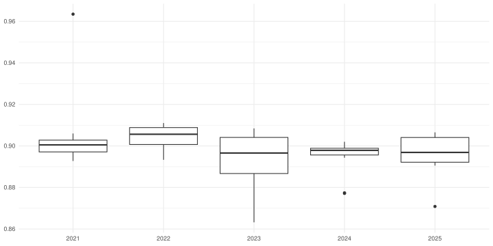
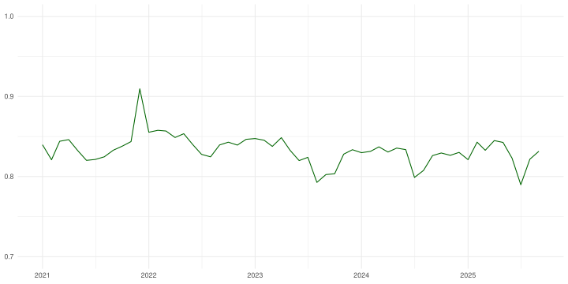
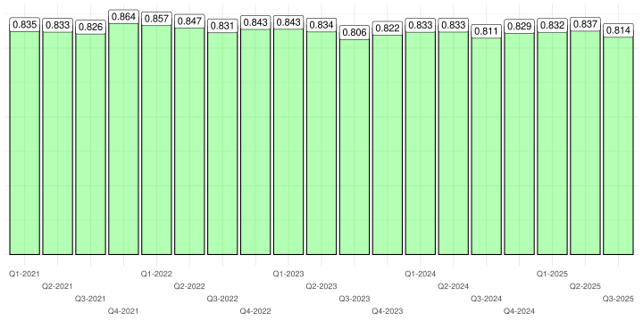
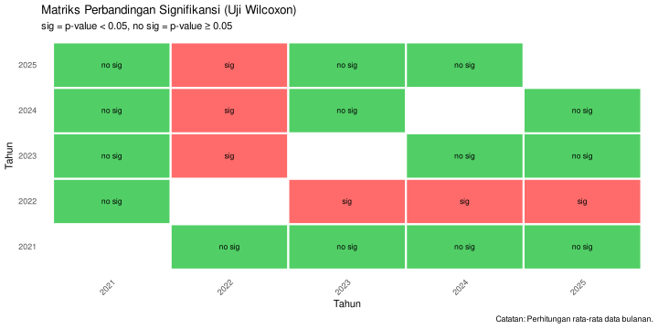
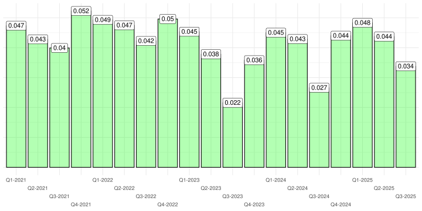

Analisa Curah Hujan Tahunan
Berdasarkan Tingkat Warna Pada Laporan BMKG
Departemen Market Research
Nutrifood Indonesia
LAPORAN CURAH HUJAN
Laporan BMKG
Setiap bulan, BMKG membuat laporan terkait curah hujan di Indonesia dalam website-nya. Namun laporan tersebut disajikan dalam bentuk gambar peta berwarna sebagai berikut ini.
Semakin hijau petanya, berarti curah hujannya semakin tinggi.
Membandingkan Curah Hujan Tahunan
Untuk membandingkan curah hujan tahunan, kita perlu mengumpulkan data bulanan terlebih dahulu. Oleh karena itu, kami mengumpulkan semua gambar dari laporan bulanan di website BMKG sejak Desember 2022 hingga September 2025.
Berdasarkan gambar tersebut, kita akan melakukan pendekatan sebagai berikut: untuk menghitung curah hujan bulanan, kita bisa mengukur seberapa hijau gambar tersebut.
Semakin hijau gambar bulanan, maka curah hujan semakin tinggi.
Selain itu, kita juga akan menghitung seberapa merah dan biru.
ANALISA HIJAU
Cara Mengukur Seberapa Hijau
Setiap gambar digital memiliki setidaknya tiga layers yang terdiri dari layer Red, Green, dan Blue. Ketiga nilai dari setiap layer ini bisa diekstrak dengan teknik tertentu dan disajikan dalam bentuk matriks. Ukuran dari matriks ini merupakan \(n \times m\) yang berasal dari dimensi pixel gambar tersebut.
Dari data berbentuk matriks tersebut, akan dihitung tiga metrics pengukuran, yakni:
average_green_intensity: merupakan nilai rata-rata dari matriks di layer green.proportion_high_green: merupakan proporsi berapa banyak pixel di layer green yang memiliki tingkat hijau di atas threhold yang kita definisikan dibandingkan total pixel yang ada di layer green tersebut.average_green_dominance: merupakan nilai rata-rata dominasi warna green dibandingkan warna red dan blue.
Trend average_green_intensity

Trend average_green_intensity per Quarter
Perbedaan Tahunan: Uji Mean
average_green_intensity
Berikut adalah hasil uji signifikansinya:

Trend proportion_high_green

Trend proportion_high_green per Quarter
Perbedaan Tahunan: Uji Mean
proportion_high_green
Berikut adalah hasil uji signifikansinya:
Trend average_green_dominance
Trend average_green_dominance per Quarter
Perbedaan Tahunan: Uji Mean
average_green_dominance
Berikut adalah hasil uji signifikansinya:
ANALISA MERAH
Cara Mengukur Seberapa Merah
Setiap gambar digital memiliki setidaknya tiga layers yang terdiri dari layer Red, Green, dan Blue. Ketiga nilai dari setiap layer ini bisa diekstrak dengan teknik tertentu dan disajikan dalam bentuk matriks. Ukuran dari matriks ini merupakan \(n \times m\) yang berasal dari dimensi pixel gambar tersebut.
Dari data berbentuk matriks tersebut, akan dihitung tiga metrics pengukuran, yakni:
average_red_intensity: merupakan nilai rata-rata dari matriks di layer red.proportion_high_red: merupakan proporsi berapa banyak pixel di layer red yang memiliki tingkat merah di atas threhold yang kita definisikan dibandingkan total pixel yang ada di layer red tersebut.average_red_dominance: merupakan nilai rata-rata dominasi warna red dibandingkan warna green dan blue.
Trend average_red_intensity
Trend average_red_intensity per Quarter
Perbedaan Tahunan: Uji Mean
average_red_intensity
Berikut adalah hasil uji signifikansinya:
Trend proportion_high_red
Trend proportion_high_red per Quarter
Perbedaan Tahunan: Uji Mean
proportion_high_red
Berikut adalah hasil uji signifikansinya:
Trend average_red_dominance
Trend average_red_dominance per Quarter
Perbedaan Tahunan: Uji Mean
average_red_dominance
Berikut adalah hasil uji signifikansinya:
ANALISA BIRU
Cara Mengukur Seberapa Biru
Setiap gambar digital memiliki setidaknya tiga layers yang terdiri dari layer Red, Green, dan Blue. Ketiga nilai dari setiap layer ini bisa diekstrak dengan teknik tertentu dan disajikan dalam bentuk matriks. Ukuran dari matriks ini merupakan \(n \times m\) yang berasal dari dimensi pixel gambar tersebut.
Dari data berbentuk matriks tersebut, akan dihitung tiga metrics pengukuran, yakni:
average_blue_intensity: merupakan nilai rata-rata dari matriks di layer blue.proportion_high_blue: merupakan proporsi berapa banyak pixel di layer blue yang memiliki tingkat biru di atas threhold yang kita definisikan dibandingkan total pixel yang ada di layer blue tersebut.average_blue_dominance: merupakan nilai rata-rata dominasi warna blue dibandingkan warna red dan green.
Trend average_blue_intensity
Trend average_blue_intensity per Quarter
Perbedaan Tahunan: Uji Mean
average_blue_intensity
Berikut adalah hasil uji signifikansinya:

Trend proportion_high_blue
Trend proportion_high_blue per Quarter
Perbedaan Tahunan: Uji Mean
proportion_high_blue
Berikut adalah hasil uji signifikansinya:
Trend average_blue_dominance
Trend average_blue_dominance per Quarter

Perbedaan Tahunan: Uji Mean
average_blue_dominance
Berikut adalah hasil uji signifikansinya:
PREDICTIVE MODELLING
Membuat Predictive Modelling
Pada bagian ini, kita akan membuat model prediktif yang berfungsi untuk memprediksi nilai selling out berdasarkan nilai warna yang telah kita hitung pada bagian sebelumnya.
Selling out value yang digunakan adalah khusus produk NutriSari Polos sejak Januari 2021 hingga September 2025.
Model dibuat menggunakan prinsip deep learning dengan framework Tensorflow.
Tujuan Predictive Modelling
Model yang dibangun kelak akan di-explain sehingga kita bisa mengetahui faktor apa saja yang berpengaruh terhadap selling out.
Goodness of Fit
Model dibangun menggunakan semua data dengan epochs sebanyak 12.000.
Goodness of fit dari model dihitung menggunakan \(R^2\) sebesar 0.7538.
Model Explainer
Tiga variabel yang paling berpengaruh adalah dominance, baik untuk warna biru, hijau, dan merah.

Model Explainer
Ada kecenderungan:
- Semakin hijau, maka selling out semakin rendah.
- Semakin merah, maka selling out semakin tinggi.
TERIMA KASIH
LAMPIRAN
Model Explainer
Pada saat max selling out
Pada saat min selling out
Analisa Curah Hujan Tahunan